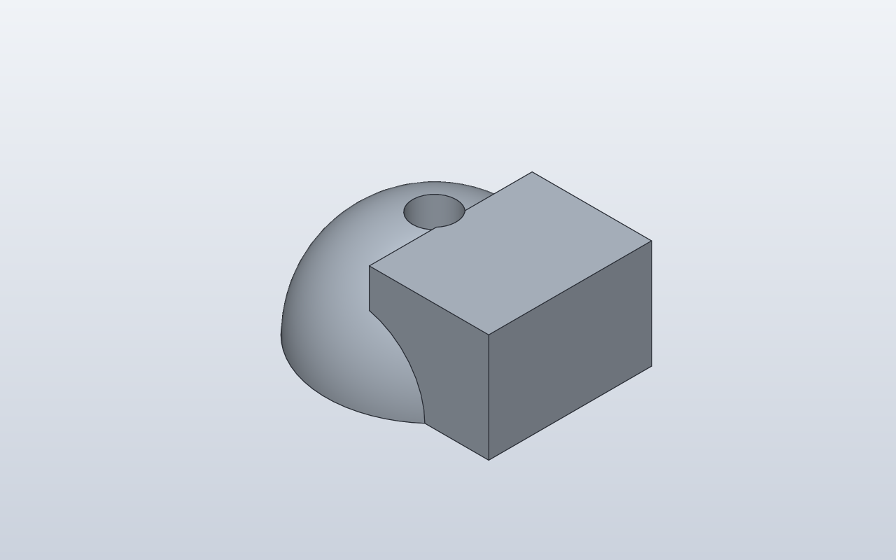
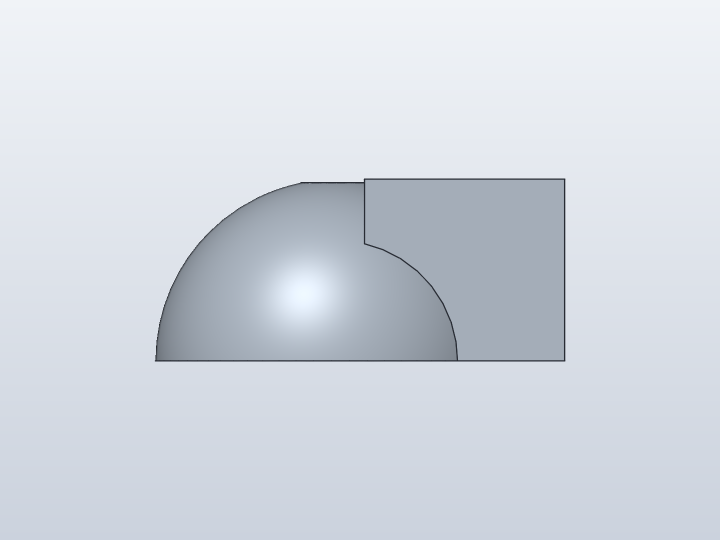
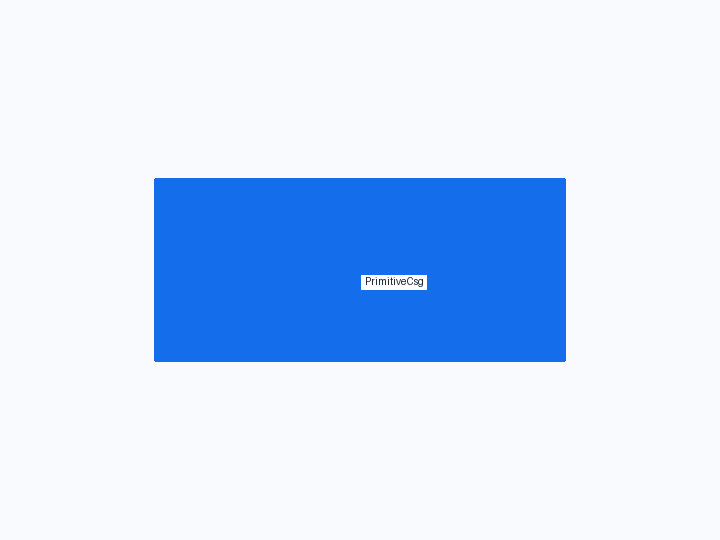
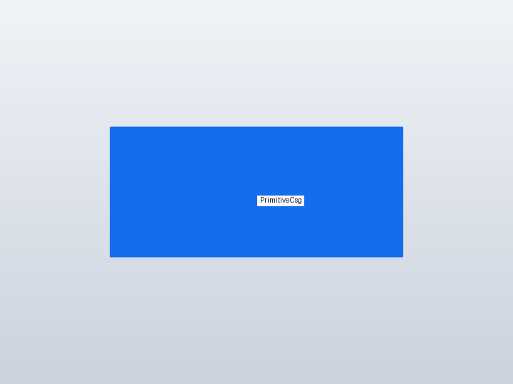
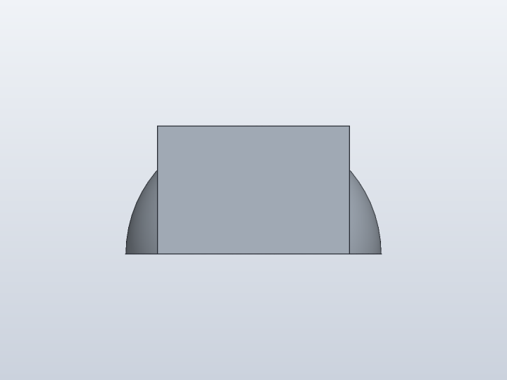
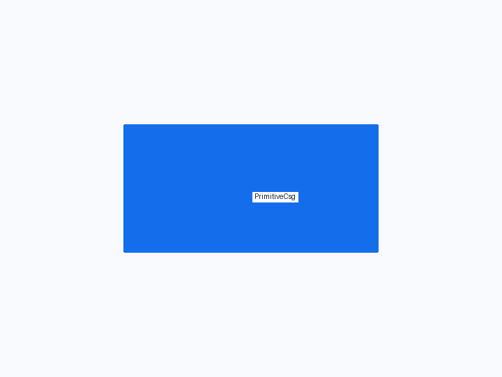
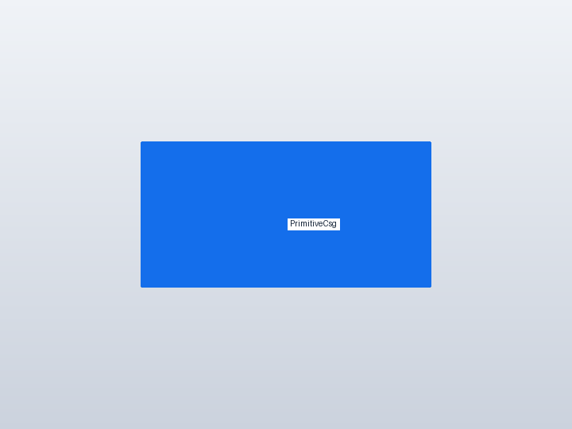
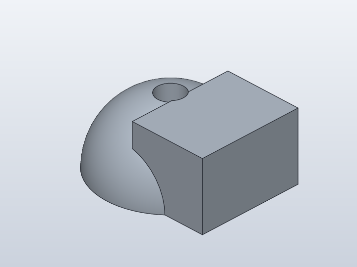
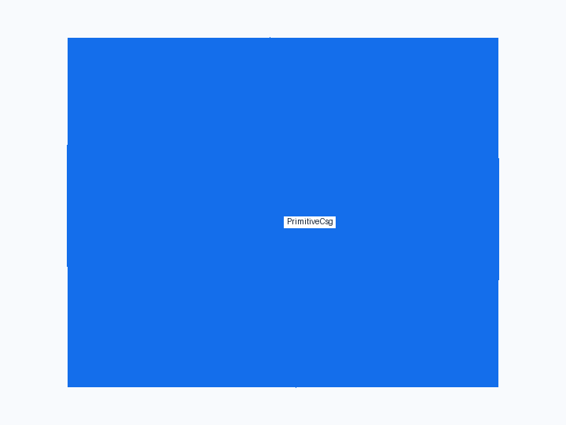
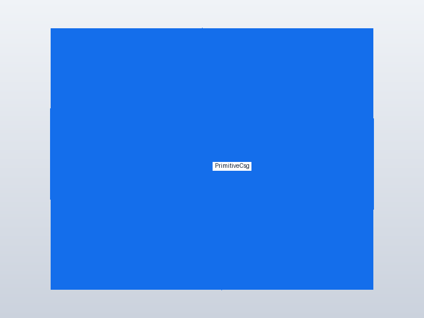

Forge qualification case
Primitive CSG
Qualify direct primitive/CSG modelling independently of feature-history geometry: Sphere and Box union, translated primitives, one ordinary Cylinder cut and intersection.










1. Forge contract
Public API
Sphere(); Box(...).move(...); Cylinder(...).move(...); + / - / &
Internal Forge model
A Shape CSG tree rooted in Sphere so Forge deliberately selects the direct CSG compiler instead of the feature-history Box compiler.
SolidCraft lowering
solid.sphere(new), solid.box(join), one Z-axis solid.cylinder(cut), then solid.box(intersect).
2. Native verification
Expected result
SolidCraft accepts the complete CSG command path, produces one valid clipped body and evaluates the native timeline without errors.
Parametric mutation
No saved-design mutation in this case; it isolates primitive CSG lowering. Parametric edits are covered by dedicated Q5 cases.
Evidence
- Fixture source
- Generated command JSON
- results.json
- measurements.json
- joint-inspect.json
- model.sc
- model.step
- qualification-result.json
- validation.json
- visual-validation.json
- camera-front.json
- camera-iso.json
- camera-right.json
- Native snapshot: model.png
- Native snapshot: model-front.png
- Native snapshot: goal-front.png
- Native snapshot: overlay-front.png
- Native snapshot: model-right.png
- Native snapshot: goal-right.png
- Native snapshot: overlay-right.png
- Native snapshot: model-iso.png
- Native snapshot: goal-iso.png
- Native snapshot: overlay-iso.png


3. Results
Baseline · 1 bodies · measurements.json
No editable parameters in this result.
Bodies
| Body | BBox min | BBox max |
|---|---|---|
| PrimitiveCsg | [-20, -19.9997, 5.95194e-05] | [25.0001, 19.9997, 20] |
Semantic validation
| Status | Level | Check | Expected | Actual |
|---|---|---|---|---|
| PASS | Q4 | declared target geometry | [{"label": "PrimitiveCsg", "min": [-20, -20, 0], "max": [25, 20, 20]}] | [{"min": [-19.999999999494193, -19.999665155175794, 5.9519390469256e-05], "max": [25.000116688074947, 19.99966515508273, 20.00000000000001]}] |
| PASS | Q4 | single resulting CSG body | 1 | 1 |
| PASS | Q4 | sphere survives CSG | 1 | 1 |
| PASS | Q4 | cylindrical bore survives CSG | 1 | 1 |
| PASS | Q4 | clipped bounds | {"min": [-20, -20, 0], "max": [25, 20, 20]} | {"max": [25.000116688074947, 19.99966515508273, 20.00000000000001], "min": [-19.999999999494193, -19.999665155175794, 5.9519390469256e-05]} |
4. Generated native relationship/command path
solid.sphere
solid.box
solid.cylinder
solid.box5. Reference models
These comparisons clarify concepts; Forge does not promise API compatibility with them.
- OpenSCAD: Closest to ordinary union()/difference()/intersection() with translate()/rotate() around primitives.
- PythonSCAD: Useful comparison for Python objects and operators while Forge still delegates all geometry to SolidCraft.
6. Fixture source
"""Core CSG qualification: primitives, transforms and Boolean operations."""
class PrimitiveCsg:
def build(self):
body = Sphere(20)
body = body + Box(30, 30, 20).move(x=18, z=10)
# Cylinder stays deliberately simple: its primitive axis is Z.
bore = Cylinder(d=8, h=60).move(z=-30)
body = body - bore
clip = Box(50, 50, 30).move(z=15)
return body & clip
PrimitiveCsg()